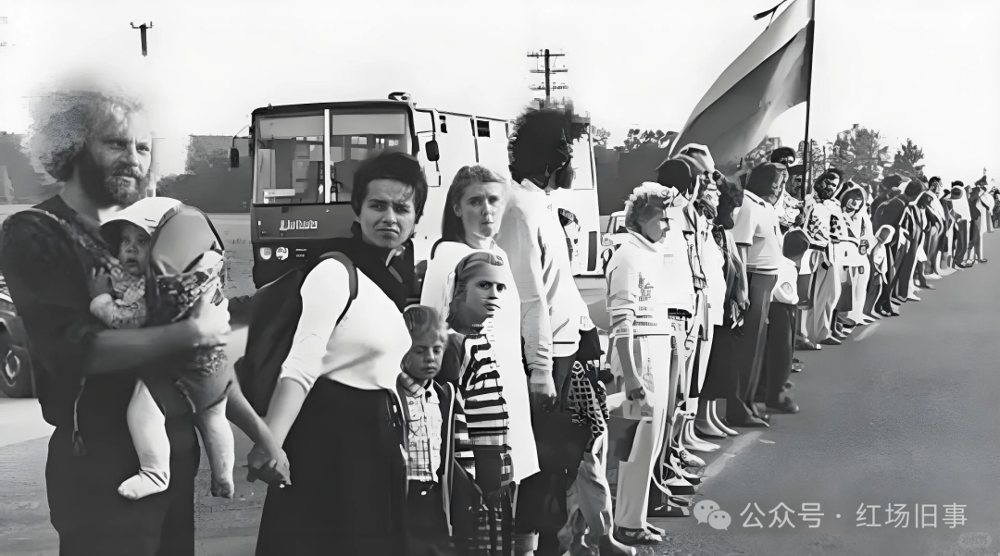
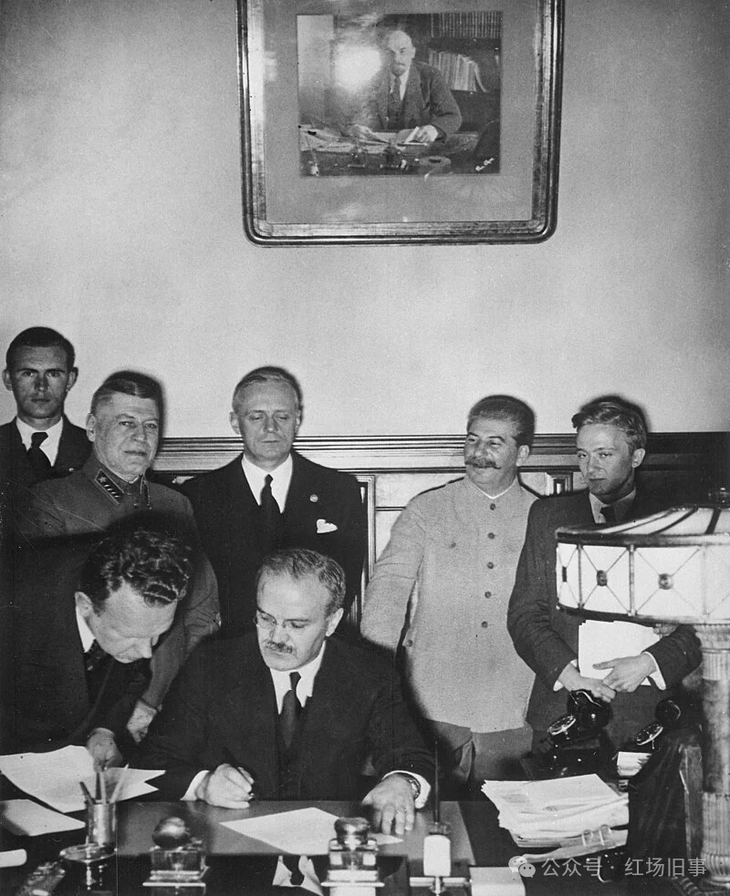
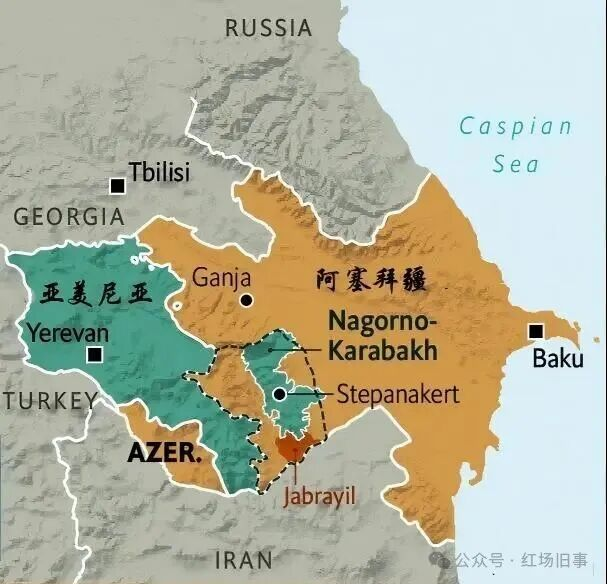
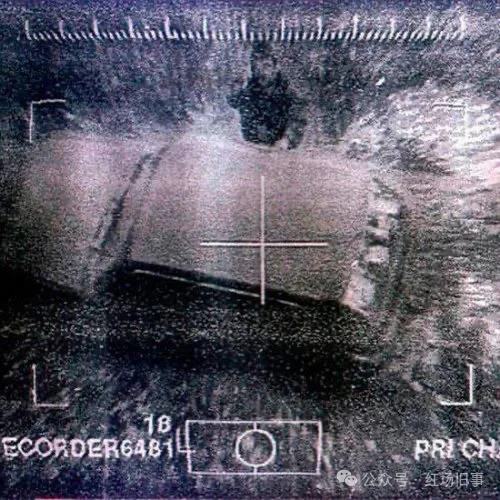
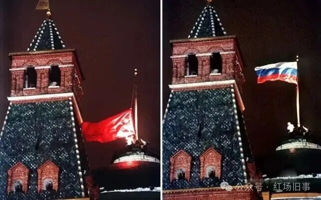

帝国一弱必崩：苏联“联邦外衣”下的民族火药桶
文字与图片版权归各自权利人所有。 查看公众号原文 ↗
1989年8月23日下午7时，波罗的海三国，维尔纽斯、里加、塔林——三个城市的钟声同时敲响。

200万人手拉手走上公路，连接成一条横跨立陶宛、拉脱维亚、爱沙尼亚的“人链”。这条600公里长的链条，沿着波罗的海海岸蜿蜒，直到黑夜看不见的远方。

苏联外长莫洛托夫签署《苏德互不侵犯条约》50年前的这一天，1939年8月23日，莫洛托夫和里宾特洛甫签署条约，波罗的海三国被划入苏联势力范围。50年后，三国人民用200万双手宣告：“我们是独立的，不是苏联的一部分。”没有人开枪，没有流血，只有沉默的手拉着手。但克里姆林宫知道：这条人链，比任何坦克都可怕。它扯碎的，不只是三国的边界，而是整个苏联赖以存在的“联邦外衣”。
一、波罗的海：先锋的呐喊波罗的海三国是苏联民族问题的“先锋”。立陶宛、拉脱维亚、爱沙尼亚，1940年被强行并入苏联。三国与俄罗斯历史文化迥异，始终视自己为“被占领的国家”。1987年后，公开性给了他们说话的机会。1988年，三国先后成立“人民阵线”。1989年“人链”之后，独立成为公开诉求。1990年3月11日，立陶宛率先宣布恢复独立。拉脱维亚、爱沙尼亚紧随其后。戈尔巴乔夫进退两难：用军队镇压，否定自己改革；放任不管，承认苏联解体。他选择经济封锁——断供石油、天然气。但封锁没用。立陶宛人排着队买蜡烛，就是不回头。1991年1月，苏军特种部队攻占维尔纽斯电视台，打死14人，打伤数百。全世界震惊。叶利钦飞到塔林，与三国领导人承认彼此主权。帝国的拳头，第一次打在空气里。
二、高加索：火药桶引爆如果说波罗的海是“先锋”，高加索就是“火药桶”。亚美尼亚与阿塞拜疆：纳卡之争纳戈尔诺-卡拉巴赫，居民75%是亚美尼亚人，行政上却在阿塞拜疆境内。1988年2月，纳卡要求并入亚美尼亚。两族在苏姆盖特市爆发流血冲突，数十人死亡。

莫斯科宣布纳卡由中央直辖，试图“冷处理”。但仇恨已经点燃。此后三年，两族互相驱逐，难民潮涌动。格鲁吉亚：第比利斯的血1989年4月9日，第比利斯。上万民众集会，要求恢复格鲁吉亚独立地位。苏军奉命驱散，用工兵铲和毒气攻击平民，19人死亡，数百人受伤。“四月悲剧”让格鲁吉亚人彻底倒向独立。1991年4月，格鲁吉亚宣布独立。车臣：沉睡的火山车臣人的记忆里有三个日期：1944年，全家被赶进火车运往中亚；1957年，赫鲁晓夫允许他们回来，但家园早已被占；1990年，杜达耶夫宣布车臣独立。

1996年4月21日，车臣领导人杜达耶夫被俄军空袭击中的瞬间
三、乌克兰：帝国的另一只脚波罗的海三国闹独立，莫斯科可以封锁；高加索打架，莫斯科可以调停。但如果乌克兰走了，苏联就真的没了。乌克兰是苏联的“二当家”：面积第二、人口第二、经济总量第二。赫鲁晓夫1954年把克里米亚划给乌克兰时，没人想到这件事有多大意义。1990年7月16日，乌克兰通过《主权宣言》，宣布乌克兰法律高于苏联法律，有权建立自己的军队。这是莫斯科不能接受的底线。但戈尔巴乔夫能怎么办？打乌克兰？那等于打自己的另一条腿。1991年8月24日，政变失败后第三天，乌克兰宣布独立。12月1日，全民公决，90%以上赞成独立。12月8日，克拉夫丘克、舒什克维奇、叶利钦签署协议，宣告苏联不复存在。乌克兰那只脚迈出去时，苏联已经站不住了。
四、苏联不是国家，是帝国为什么苏联会在民族风暴中溃不成军？答案藏在体制里。苏联是“苏维埃社会主义共和国联盟”，由15个“加盟共和国”组成的联邦。但问题是：这个联邦，从一开始就是披着外衣的帝国。1922年成立时，列宁主张民族自决权，各共和国可以自愿加入。但斯大林模式建立后，“自愿”变成强迫，“联盟”变成中央集权。各共和国虽有名义上的主权，真正的决策都在莫斯科。这种结构，在帝国强大时没问题。但当中央控制减弱时，民族问题就全面爆发。1989年“人链”是信号：帝国控制不住边缘了。1990年各国《主权宣言》是挑战：边缘开始挑战中央。1991年乌克兰独立是终结：帝国连核心也守不住了。
五、为什么帝国一弱必崩？历史规律：帝国靠强制力维系，强制力一旦减弱，离心力瞬间爆发。国家靠共同认同维系——法国人认同自己是法国人，无论政府强弱。帝国靠中央强制维系——各民族是被捏在一起的，对中央没有情感认同。苏联就是这样一个帝国。1940年之前，波罗的海三国是独立国家；1932-1933年，乌克兰经历过大饥荒；1944年，车臣人被集体流放。这些记忆没有消失，只是被压制了。当戈尔巴乔夫放开公开性、放松中央控制时，被压制几十年的记忆一起涌了出来。1989年那条200万人的人链，就是这些记忆的具象化。戈尔巴乔夫后来回忆：“我忘了，有些人从来就没想留在我的国家里。”
结语：帝国的最后一天1991年12月25日，克里姆林宫红旗降下时，15个共和国已全部宣布独立。

波罗的海三国最早离开，格鲁吉亚紧随其后，乌克兰的公投敲响丧钟。剩下的共和国，不是不想走，只是还没找到机会。那面红旗降下时，站在电视前的，有立陶宛的老人，有亚美尼亚的难民，有格鲁吉亚的伤者家属，有车臣的退役将军。他们的表情各不相同。有人哭，有人笑，有人沉默。但他们都知道：那条1989年的人链，终于走到了终点。四年零四个月前，200万只手牵在一起，画出一条穿越三个共和国的线。那是一个信号：帝国开始松动。四年零四个月后，那面飘了七十年的红旗，被降了下来。
帝国的逻辑很简单：你不能永远强制所有人留在你身边。总有一天，手会松开。